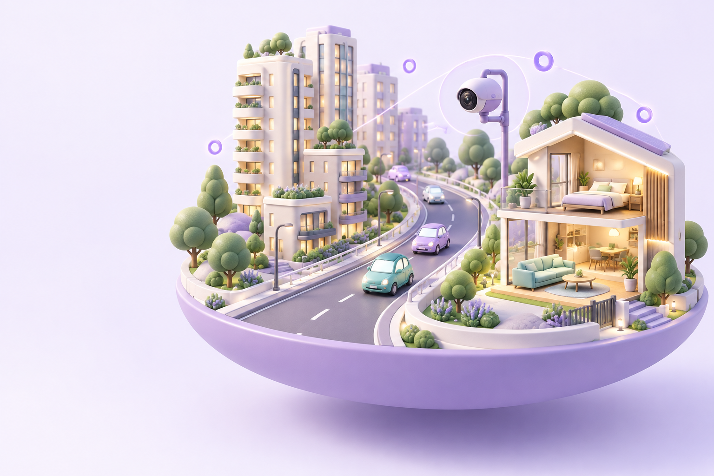
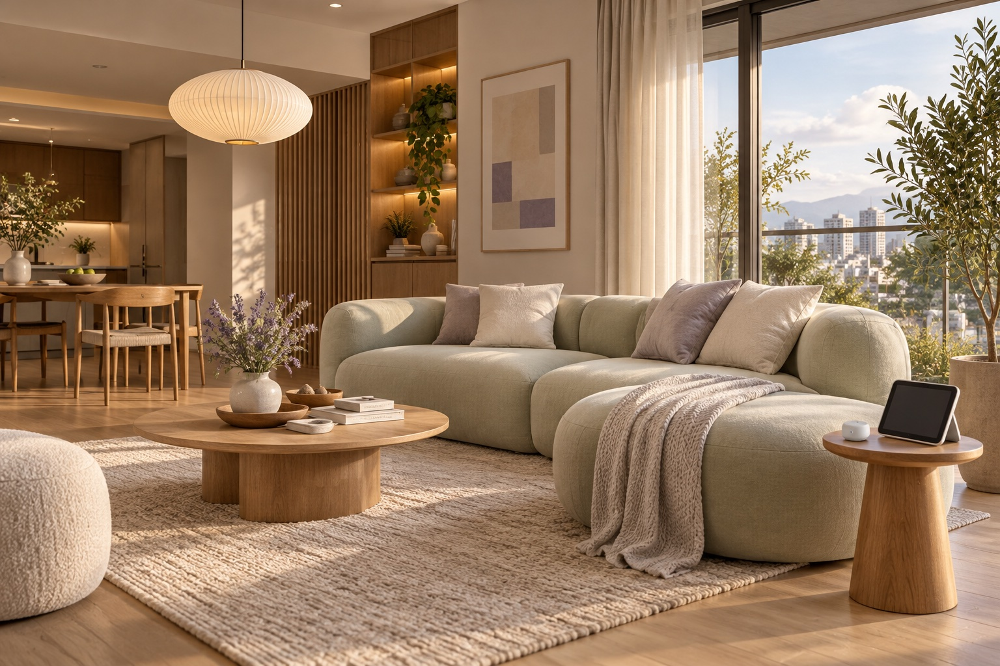

01 / 智慧交通↗
讀懂車流，
看見城市的節奏。
讓道路影像成為有用的資訊。透過 AI 車流分析，協助掌握路口流量，為交通規劃提供更清晰的視角。
影像辨識車流統計場域分析
AI TRAFFIC / 情境示意
從城市的每一次通行，
到家裡的每一刻安心。
羅伯斯特把複雜的 AI，變成貼近生活的解答。
用看得見的洞察，創造感受得到的改變。

扎根技術，讓好想法發生。
OUR SOLUTIONS
把技術放進對的地方。
讓城市運作更有依據，讓生活多一份從容。
讓道路影像成為有用的資訊。透過 AI 車流分析，協助掌握路口流量，為交通規劃提供更清晰的視角。
把日常需求與智慧控制連在一起。從居家情境到設備整合，和你一起打造更直覺、更自在的生活體驗。

產品方向與情境為初版提案；實際功能依需求與設備整合確認。
A LITTLE INTERACTION
從一個路口，到一個房間。試著換個情境看看。
選擇不同時段，觀察示意車流的變化。把看不完的影像，轉化為一眼能讀懂的資訊。
互動示範・使用模擬資料，非實際監測結果從流量趨勢，找到場域規劃的起點。
回家、專注、休息。選一個適合此刻的模式，看看燈光與室內氛圍如何一起改變。
互動情境示範・未連接真實設備BUILT FOR THE REAL WORLD
從場域與需求出發，釐清真正要解決的事，找到適合你的 AI 導入方向。
結合影像辨識、模型優化與軟韌體整合，讓技術從概念走向可用的系統。
從概念驗證到場域調整，以實作與回饋逐步打磨，讓解答貼近使用的人。